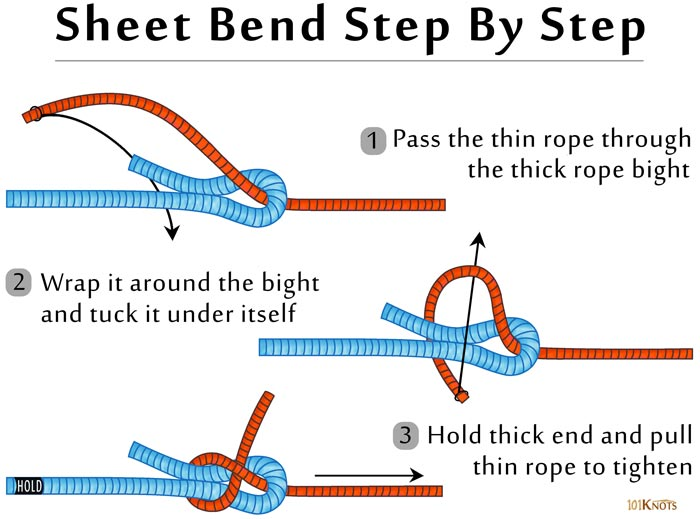

Sheet Bend Knot
The sheet bend is my favorite one of all, even though technically it’s a “bend”—a type of knot that connects one rope to another. I like it because it’s the best bend for tying different types of material together or joining different thicknesses of rope. This knot even joins together lines or materials that normally couldn’t be joined together because of differences in diameter.
How to tie a sheet bend:
To create a sheet bend, bend the thicker or more slippery rope into a “J” shape (like a fish hook). Then pass the other rope through the hook shape from behind, wrap it around the entire fishhook once and then tuck the smaller line between itself and the other rope. If the ropes are the same diameter and texture, the sheet bend actually resembles a square knot. To tie a sheet bend with fabric or a tarp, collect, squeeze, and shape the material into a “J” shape, and then run your rope through and around the “J.”
